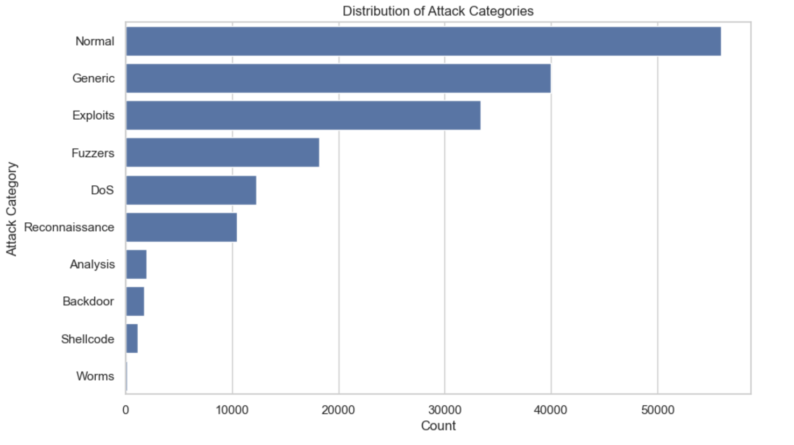
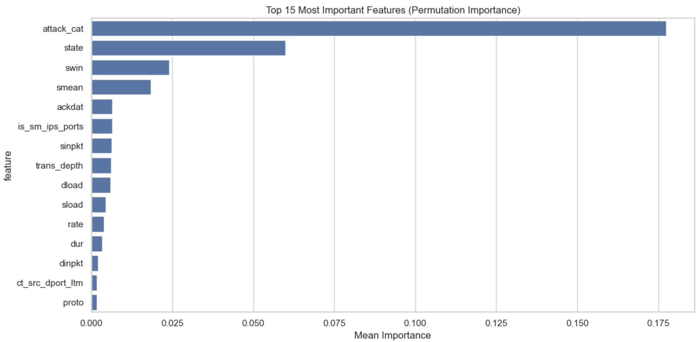

Executive Summary
The AI-Powered Intrusion Detection System is a project aimed at enhancing network security by designing an intelligent Intrusion Detection System (IDS). By leveraging both signature-based and anomaly detection techniques through machine learning models, the project seeks to identify and prevent cyberattacks in real-time, addressing the increasing challenges organizations face in securing their networks.
Introduction
Background Information
As internet-based services proliferate, the threat landscape for cyberattacks expands correspondingly. Organizations are under constant risk from data breaches, unauthorized access, and various network threats. Traditional security measures are often insufficient to combat sophisticated attacks, necessitating advanced solutions like intelligent IDS that can monitor and analyze network traffic to identify suspicious activities proactively.
Objectives
- Primary Goal: Design and implement an effective Network Intrusion Detection System utilizing machine learning techniques.
- Specific Objectives:
- Employ both signature-based and anomaly detection methods.
- Utilize the UNSW-NB15 dataset for training and evaluating the IDS.
- Develop machine learning models capable of identifying unusual network traffic patterns.
- Create visualizations to represent traffic trends and detected threats.
Project Proposal
Problem Statement
Organizations face increasing challenges in securing their networks from threats like data breaches and unauthorized access. An effective Network Intrusion Detection System (IDS) is essential for monitoring and identifying suspicious network activities in real-time to prevent such attacks and protect sensitive data.
Solution Overview
Our goal is to design and implement a Network Intrusion Detection System (IDS) that uses both signature-based and anomaly detection techniques. We employ data science methods, leveraging machine learning to identify and flag unusual or potentially dangerous network traffic patterns.
Scope and Limitations
- Scope:
- Implementation of IDS using Python and relevant libraries.
- Detection of intrusions using machine learning models such as Random Forest and Support Vector Machines (SVM).
- Visualization of network traffic data and detected anomalies.
- Limitations:
- The ability to generalize the models to real-world environments beyond the UNSW-NB15 dataset.
- Real-time processing capabilities may be limited due to computational demands.
Methodology
Materials and Tools
- Programming Language: Python
- Libraries: pandas, scikit-learn, matplotlib, seaborn
- Dataset: UNSW-NB15 dataset (a comprehensive dataset with labeled network traffic data for training and evaluation)
- Development Environment: Jupyter Notebook
Development Process
- Data Collection: Utilize the UNSW-NB15 dataset to train and test the IDS.
- Data Preprocessing: Clean the dataset to handle missing values and normalize data.
- Feature Engineering: Extract relevant features such as protocol types, port numbers, packet sizes, and timestamps.
- Model Development: Implement machine learning models (e.g., Random Forest, SVM) for anomaly detection.
- Model Training and Evaluation: Train models using the training subset and evaluate performance.
- Visualization: Create graphs and charts to represent traffic trends and model performance.
Code Implementation
Overview of the Code Structure
The code is organized into several modules, each responsible for different aspects of the system:
- Data Preprocessing Module: Handles data loading, cleaning, and preprocessing tasks.
- Feature Engineering Module: Extracts and processes features necessary for model training.
- Model Training Module: Implements the machine learning models and handles training and evaluation.
- Visualization Module: Generates plots and charts to visualize data distributions and model performance.
- Detection Module: Contains functions to simulate detection on new data samples.
Key Code Snippets
# Import Libraries
import pandas as pd
import numpy as np
import matplotlib.pyplot as plt
import seaborn as sns
# Machine Learning Libraries
from sklearn.svm import SVC
from sklearn.preprocessing import LabelEncoder, StandardScaler
from sklearn.model_selection import train_test_split
from sklearn.metrics import classification_report, confusion_matrix, roc_auc_score, roc_curve
from sklearn.inspection import permutation_importance
import joblib
# Feature Scaling Using StandardScaler
scaler = StandardScaler()
X_train_scaled = scaler.fit_transform(X_train_sampled)
X_test_scaled = scaler.transform(X_test_full)
# Initialize the SVM Classifier with Balanced Class Weights
svm_classifier = SVC(kernel='rbf', probability=True, random_state=42, class_weight='balanced')
# Train the SVM Model on the Sampled Data
svm_classifier.fit(X_train_scaled, y_train_sampled)
print("\nSVM model with class_weight='balanced' trained successfully.")
# Calculate Feature Importance using permutation importance
result = permutation_importance(
svm_classifier, X_train_scaled, y_train_sampled,
n_repeats=10,
random_state=42,
n_jobs=-1
)
Results
Data Analysis
The exploratory data analysis provided insights into the dataset's structure and the distribution of network traffic types.
Feature Importance
Feature importance was calculated using permutation importance, identifying key features contributing to the model's predictions.
Model Performance
The SVM classifier achieved high accuracy in detecting both normal and malicious traffic.
SVM Classifier Report:
precision recall f1-score support
0 0.91 0.96 0.94 11200
1 0.98 0.96 0.97 23869
accuracy 0.96 35069
macro avg 0.95 0.96 0.95 35069
weighted avg 0.96 0.96 0.96 35069
Discussion
Interpretation of Results
The models, particularly the SVM classifier, showed high accuracy in detecting known attack patterns and identifying anomalies in network traffic.
Challenges Faced
- Model Generalization: The models may not generalize well to real-world scenarios outside of the UNSW-NB15 dataset.
- Imbalanced Data: Difficulty in detecting rare attack types due to class imbalance.
- Real-Time Processing: Computational demands hindered the ability to process data in real-time.
Conclusion
Summary
The project successfully demonstrates a method to detect network intrusions by combining signature-based detection with machine learning-based anomaly detection.
Future Work
- Model Enhancement: Test and adapt models for real-world network environments.
- Real-Time Processing: Optimize algorithms for faster inference.
- Scalability: Investigate cloud-based solutions or distributed computing for handling large-scale data.
Appendix
Full Code Listings
The full code is available in the project's GitHub repository: